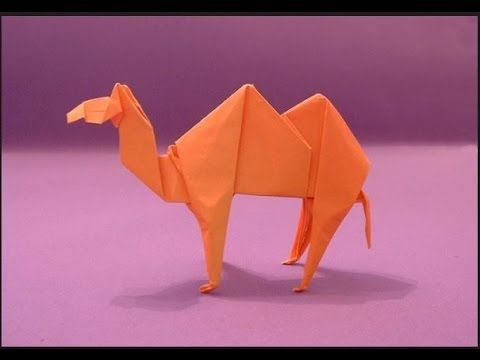

pigeon
chicks at the same time.
of caring for and raising young.
Panda
- With this link you can fold Panda from the jungle.
- Giant pandas (often referred to as simply “pandas”)
are black and white bears. In the wild, they are
found in thick bamboo forests, high up in the mountains
of central China – you can check out our cool facts about
China, here!.

Camel
- With this link you can fold camel from the desert.
They require very little water - There are two types of camels: One humped or
“dromedary” camels and two humped Bactrian camels.